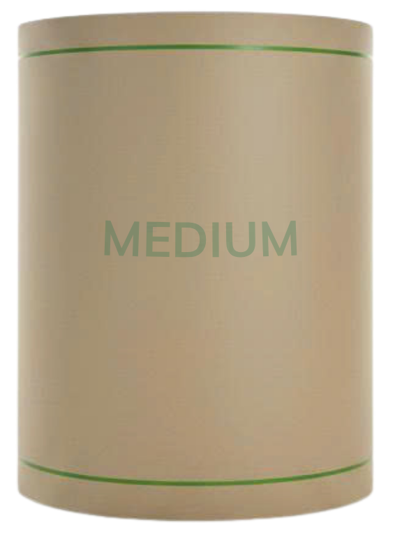
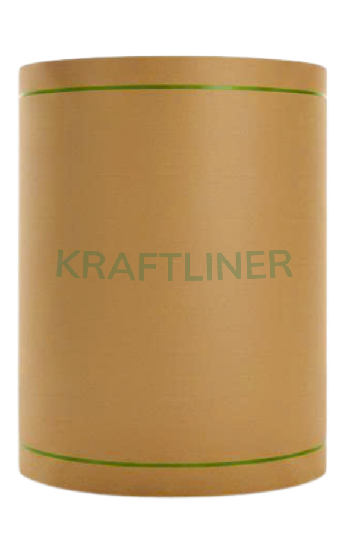
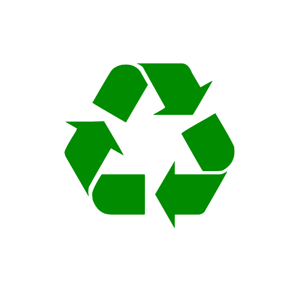

Medium

Medium
| Khổ giấy | 4.200mm | 4.600mm |
|---|---|---|
| Định lượng | 135–220 g/m² | 80–130 g/m² |
Giấy sóng làm lớp lượn sóng giữa thùng carton — nhẹ, đàn hồi và bền.n.
Xem chi tiếtBa dòng giấy bao bì tái chế chủ lực — cùng nguồn giấy thu hồi khép kín vòng tuần hoàn.

| Khổ giấy | 4.200mm | 4.600mm |
|---|---|---|
| Định lượng | 135–220 g/m² | 80–130 g/m² |
Giấy sóng làm lớp lượn sóng giữa thùng carton — nhẹ, đàn hồi và bền.n.
Xem chi tiết
| Khổ giấy | 4.200mm | 4.600mm |
|---|---|---|
| Định lượng | 135–200 g/m² | 80–130 g/m² |
Dùng làm lớp mặt hoặc lớp lót cho thùng carton, hộp carton và các sản phẩm bao bì giấy khác.
Xem chi tiết
| Khổ giấy | 4.200mm |
|---|---|
| Định lượng | 126–200 g/m² |
Dùng làm lớp mặt cho thùng carton cao cấp, túi giấy và các sản phẩm bao bì cần độ bền, tính thẩm mỹ cao.
Xem chi tiết
Nguyên liệu cốt lõi — giấy thu hồi được thu mua & phân loại có trách nhiệm, khép kín vòng tuần hoàn cho mọi sản phẩm phía trên.